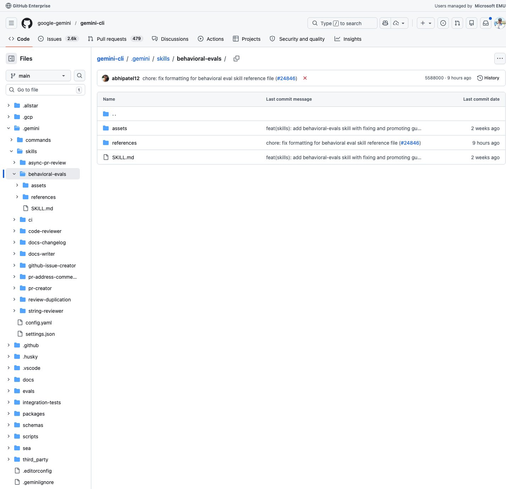
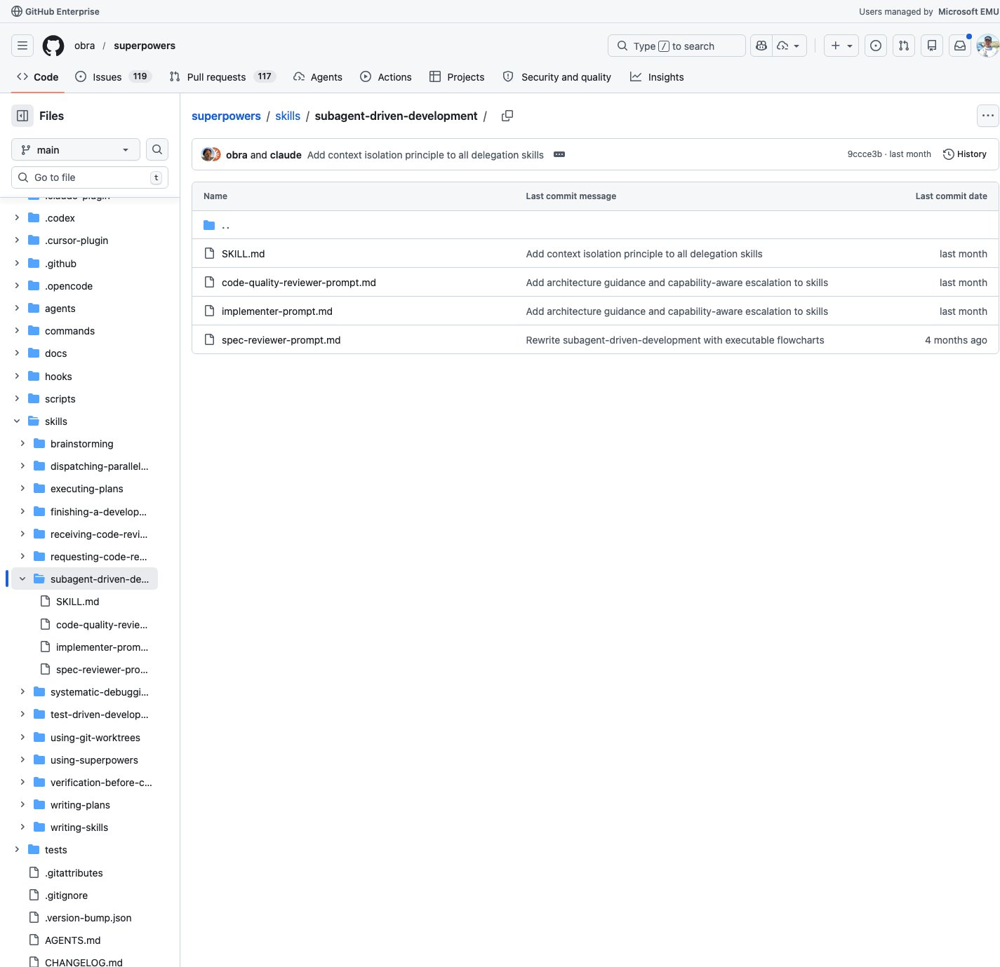
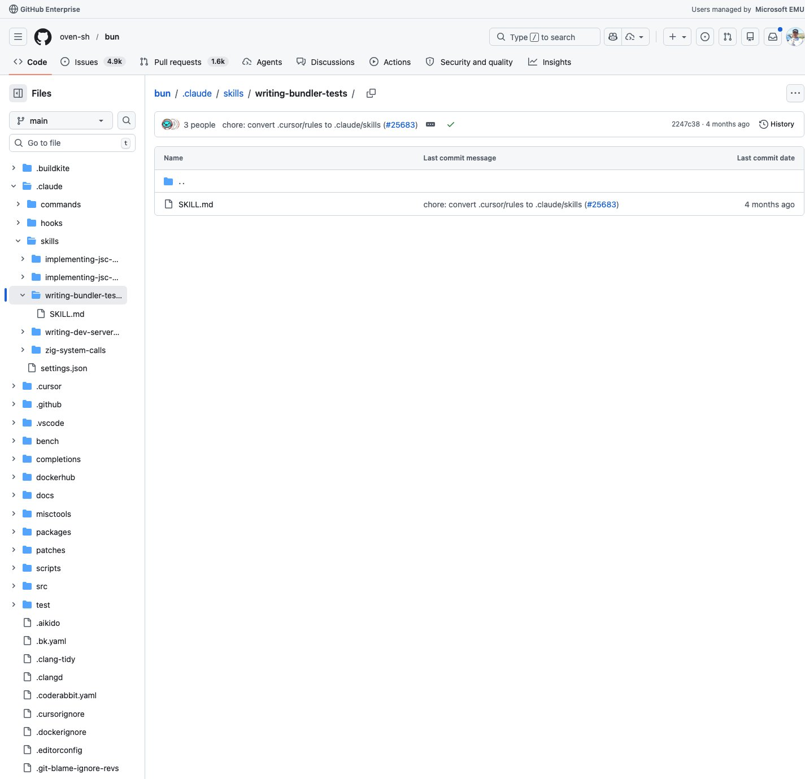
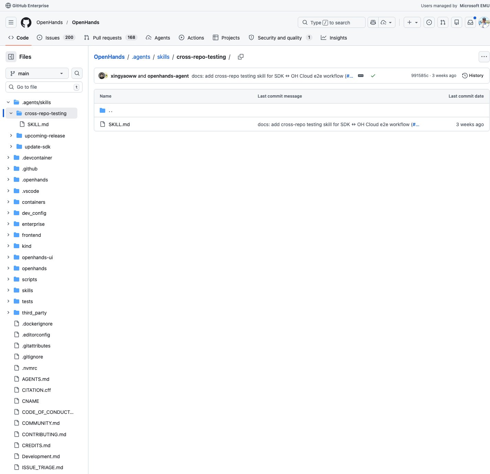
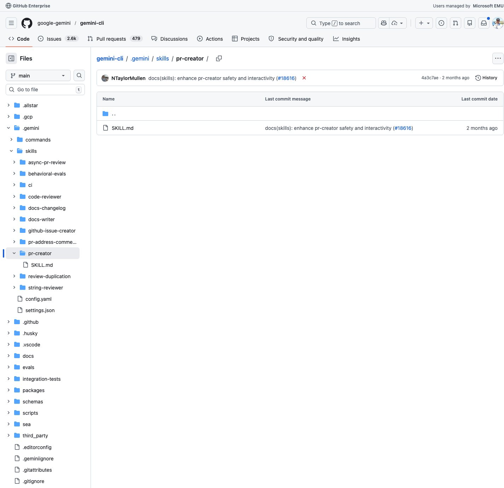

5个Agent Skills新星速报！Gemini行为评估、子Agent驱动开发、Bun打包测试等
Neo整理
Agent Skills 是 AI 编程助手（Claude Code、Codex、Gemini CLI 等）的可复用能力模块。今天我扫描了 SkillsMP（784,000+ skills）等平台，筛选出来自知名开源项目、实用价值高的热门 Skills。
本期介绍 5 个精选 Skills，涵盖 AI 评估测试、多Agent编排、打包器测试、跨仓库E2E测试、PR自动创建等领域。
Behavioral Evals：AI Agent 行为评估框架
Behavioral Evals Skill 是 Google Gemini CLI 团队的内部评估框架指南。它教你如何创建、运行、修复和晋升行为评估测试——验证 AI Agent 的决策逻辑（如工具选择），而非纯功能测试。
💡 核心价值：当你修改 prompt 或工具配置后，需要验证 Agent 行为是否符合预期。这套框架提供了从"编写断言 → 本地验证 → CI 集成 → 测试晋升"的完整流水线。
工作流决策树：
- 需要验证 prompt/工具变更？ → 进入行为评估流程
- UI/交互密集型？ → 用
appEvalTest（AppRig） - 纯逻辑验证？ → 用
evalTest（TestRig） - 新测试？ → 策略设为
USUALLY_PASSES；稳定后晋升为ALWAYS_PASSES
# 行为评估示例
# 1. 用 files 对象模拟工作区（如 Node.js 项目）
# 2. 用 rig.setBreakpoint() 或 rig.readToolLogs() 做断言
# 3. 用 Vitest 本地运行单个测试
# 参考文档
references/creating.md # 断言策略、Rig 选择、Mock MCP
references/fixing.md # 自动排查、架构诊断
references/promoting.md # 晋升标准和阈值
Subagent-Driven Development：子Agent驱动的开发模式
Subagent-Driven Development Skill 来自 Jesse Vincent 的 Superpowers 项目，定义了一种"每个任务启动独立子Agent + 双阶段审查"的开发范式。核心原则：隔离上下文 + 规范审查 + 质量审查 = 高质量快速迭代。
💡 核心价值：避免长会话中的上下文污染。每个任务由全新子Agent执行，完成后依次经过"规范一致性审查"和"代码质量审查"两个独立审查Agent。
流程设计：
- Implementer — 独立子Agent，接收精确构造的指令和上下文
- Spec Reviewer — 检查实现是否符合规范
- Code Quality Reviewer — 检查代码质量
- TodoWrite — 标记任务完成，进入下一个
# 核心文件
SKILL.md # 流程总览和决策树
implementer-prompt.md # 实现者子Agent的提示词
spec-reviewer-prompt.md # 规范审查子Agent
code-quality-reviewer-prompt.md # 质量审查子Agent
# 适用场景
- 有实现计划，任务间基本独立
- 想在当前会话中执行（非并行会话）
- 需要高质量、快速迭代
Writing Bundler Tests：Bun 打包器测试指南
Writing Bundler Tests Skill 是 Bun 团队的内部测试编写指南，详细说明如何使用 itBundled() 框架测试 Bun 的打包器、转译器和代码转换功能。
💡 核心价值：Bun 的打包器测试框架设计精巧——用声明式配置描述测试场景，支持文件系统模拟、多目标构建（bun/browser/node）、运行时验证等。是测试框架设计的优秀范例。
测试能力：
- 文件模拟 —
files定义输入，runtimeFiles定义运行时文件 - 多格式支持 — ESM / CJS / IIFE
- Minification — 空白、标识符、语法三维度压缩
- 运行验证 — 检查 stdout、stderr、exit code
import { itBundled, dedent } from "./expectBundled";
describe("bundler", () => {
itBundled("category/TestName", {
files: {
"index.js": `console.log("hello");`,
},
run: {
stdout: "hello",
},
});
});
// 测试ID格式：category/TestName
// 如 banner/CommentBanner, minify/Empty
Cross-Repo Testing：跨仓库 E2E 测试
Cross-Repo Testing Skill 来自 OpenHands（前 OpenDevin）项目，解决了一个经典难题：当功能横跨 SDK 和 Cloud 后端两个仓库时，如何做端到端测试？
💡 核心价值：定义了两种跨仓库测试流程——Flow A（SDK 调用新 Cloud API）和 Flow B（Cloud 使用未发布 SDK），以及两者同时出现的组合场景。包含 Staging 部署、Docker 镜像 Pin、Helm Chart 配置等实战细节。
仓库映射：
- software-agent-sdk — Agent 核心，SDK/Workspace/Tools 包
- OpenHands — Cloud 后端，FastAPI + 沙箱管理
- deploy — 基础设施，Helm Charts + GitHub Actions
# Flow A: SDK 调用新 Cloud API
1. 在 OpenHands 仓库实现新 API 端点
2. 推 PR，等 Docker CI 构建 enterprise-server 镜像
3. 在 SDK 仓库实现客户端代码
4. 部署 server PR 到 staging
5. 用 staging URL 运行 SDK 集成测试
# Flow B: Cloud 使用未发布 SDK
1. 在 SDK 仓库实现新功能
2. 在 OpenHands 仓库 pin SDK 到未发布 commit
3. 同时 pin agent-server 镜像到 SDK PR 的构建产物
PR Creator：标准化 Pull Request 创建
PR Creator Skill 同样来自 Gemini CLI 项目，确保所有 AI 创建的 Pull Request 都遵循仓库模板和标准。从分支管理到描述填写到预检脚本，一气呵成。
💡 核心价值：解决了 AI 编程助手创建 PR 时的常见问题——忘记切分支、描述不规范、跳过 checklist、没跑预检。这个 Skill 把最佳实践编码为可执行规范。
工作流程：
- 分支检查 — 确保不在 main 分支上直接提交
- 模板定位 — 自动查找
.github/pull_request_template.md - 描述起草 — 严格遵循模板结构，逐项填写 checklist
- 预检运行 —
npm run preflight确保 build/lint/test 通过 - 安全护栏 — 交互式确认，用户明确批准后才推送
# 工作流
1. git branch --show-current # 确保不在 main
2. git status # 检查未提交变更
3. 查找 PR 模板
4. 填写模板（保留所有 heading 和 checklist）
5. npm run preflight # 预检
6. gh pr create # 创建 PR（需用户确认）
# 安全规则
- NEVER commit directly to main
- ALWAYS run preflight before creating PR
- ALWAYS wait for user confirmation
总结
今天介绍的 5 个 Skills 都来自知名开源项目（Gemini CLI、Superpowers、Bun、OpenHands），代表了 Agent Skills 生态中"质量保障"这一主题：
- AI 行为验证 — Behavioral Evals（验证 Agent 决策）
- 开发范式 — Subagent-Driven Development（隔离 + 双阶段审查）
- 测试框架 — Writing Bundler Tests（声明式打包测试）
- E2E 测试 — Cross-Repo Testing（跨仓库端到端验证）
- 流程规范 — PR Creator（标准化 PR 创建）
随着 AI Agent 参与开发的深度增加，"如何验证 Agent 的行为是否正确"成为关键课题。本期 Skills 提供了从单元测试到集成测试到行为评估的全方位参考。SkillsMP 已收录 784,000+ 个 Skills，生态持续壮大。